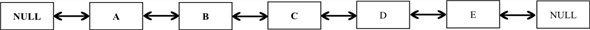

Linked list is a data structure in which all elements are arranged in linear order. In singly linked list, each node contains two fields. One is data field and another one is address field. Data field stores the data and address field points the address of the next node.
The following are the two kinds of dynamic-set operations:
1. Query operations, which return some information. For example finding MAXIMUM, SUCCESSOR etc.
2. Modifying operations which change the set. For example, INSERTION and DELETION.
INSERTION on singly linked list:
• INSERTION (A,y) inserts an element y into a singly linked list A.
• Singly linked list contains only pointer next, but not prev.
• Since inserting a new node at the beginning of the singly
linked list does not require traversing linked list, INSERTION can
be possible in  time on a
singly linked list.
time on a
singly linked list.
SINGLY-LIST-INSERT (A, y)
1 y.next = A.head
2 A.head = y
Explanation of the above Algorithm:
• The above operation takes two arguments A and x. where A is a singly linked list and x is an element whose key or data attribute is already filled.
• In the above algorithm, new element is inserting at the beginning of the linked list.
• In the first line, head element is set as the next to new element.
• In the second line, head is updated as the new element is the head of the list A.
Time complexity:
• Since there is no loops used in the algorithm and the two
statements in the algorithm executes in constant time, time
complexity of inserting a new node at the beginning of a singly
linked list will be.
Thus, in the above case, insertion takes only
time.
• However, inserting a new node at the end of the singly linked list requires traversing entire list.
• Also, inserting a new node into a sorted singly linked list requires traversing the linked list.
• For some dynamic set representations, all the keys must be different. That is, no duplicates are allowed in the set. In such case, the INSERTION operation must check or transverse the entire list whether the duplicates exist or not, before inserting a new node.
Thus, in the above three cases, insertion takes
 running time.
running time.
DELETION on a singly linked list:
• It is not possible to delete a node in time,
because before deleting the node from a singly linked list, it is
necessary to search for the node that is to be deleted.
• It is already known that search require  time.
time.
• Unlike in doubly linked list, singly liked list contains only one pointer next. Thus, in singly linked list, searching for the node that is to be deleted is compulsory to update pointers after deletion.
Therefore, DELETION cannot be implemented in constant time
that is
time.
The procedure PUSH-LIST inserts an element at the top of the stack. That is, it always inserts an element onto the top of the list.
PUSH-LIST( L , x )
1. if L. Top = = NIL
2. x.next = NIL
3. x.prev = NIL
4. L.Top = x
5. else
6. L.Top.prev = x
7. X.next = L.Top
8. L.Top = x
9. x.prev = NIL
Implementation of PUSH using linked list:
void push_list(node **top,node *list)
{
if (*top == NULL)
{
list->next=NULL;
list->prev=NULL;
*top=new (struct node);
*top=list;
}
else
{
list->next=*top;
(*top)->prev=list;
*top=list;
(*top)->prev=NULL;
}
}
The above push-list function inserts an element in O(1) time.
The procedure POP-LIST always removes an element that is top of the list. If the list does not contain any elements, it raises an exception “Stack underflows”.
POP-LIST( L )
1. if L.Top = = NIL
2. error “ Stack underflows”
3. else
4. L.Top = L.Top.next
5. L.Top.prev = NIL
Implementation of POP operation using linked list:
void pop_list(node **top)
{
if(*top==NULL)
cout<<"stack underflow"<
else
{
(*top)->prev=NULL;
*top=(*top)->next;
}
}
The above pop-list operation removes the top element of the list in O(1) time.
The procedure ENQUEUE-LIST always inserts a new node x at the back end of the list L.
ENQUEUE-LIST (L, x)
1. if L.tail = NIL
2. L.next = x
3. x.prev = x
4. L.tail = x;
5. L.head = x;
6. else
7. L.next = x
8. x.prev = x
9. L.tail = x;
Implementation of ENQUEUE operation using linked list:
void enqueue(Node **tail,Node *node)
{
if(*tail==NULL)
{
(*tail)=new (struct Node);
head=new (struct Node);
(*tail)->next=node;
node->prev=(*tail);
(*tail)=node;
head=node;
}
else
{
(*tail)->next=node;
node->prev=(*tail);
(*tail)=node;
}
}
The above enqueue() operation inserts a node at the back end of the list in O(1) time.
The procedure DEQUEUE-LIST removes an element x from the front end of the list L.
DEQUEUE-LIST (L, x)
1. if L.head = = L.tail
2. error “Queue underflow”
3. else
4. x = L.headkey
5. List.front = List.front.next
6. return x
Implementation of DEQUEUE operation using linked list:
Node* dequeue(Node **head)
{
Node *x=new (struct Node);
if(*head ==tail)
cout<<"Queue underflow"<
else
{
x=(*head);
(*head)->prev=NULL;
(*head)=(*head)->next;
}
return x;
}
The above dequeue() operation removes a node from the front end of the list in O(1) time.
Doubly linked list using only one pointer
In general, a node in the doubly linked list consists data and two pointers,and. prev of a node x represents the address of a previous node of x and next of a node x represents the address of the next node of x. However, this method of the representation takes more memory as compared to that of the singly linked list.
Implementing Doubly linked list using single pointer:
• Doubly linked list can be implemented using only one pointer per node instead of maintaining prev and next.
• This pointer alone would suffice to full-fill the needs of the doubly linked list.
• This implementation would save a reasonably great amount of the memory space without affecting the capabilities of the doubly linked list.
• This implementation is possible by taking the help of XOR(exclusive-OR) operation.
o The following are the useful properties of XOR operation:
X X = 0
X 0= X
X Y= Y X
• Now, consider the pointer value (address of a node) as k-bit integer and the value of as 0 and define the information required to implement the doubly linked list as follows:
Pointer of the node:
x.np = x.next x.prev
Next node of a node x:
x.next = x.np x.prev
Previous node of a node x:
x.prev = x.np x.next
E.g.

When the control at B,
The address of C = B.np Address of A
The address of B = Address of A Address of C
The address of A = B.npaddress of C
Accessing the Head and tail of the list:
In the above example, A is the head and E is the tail.
• If previous of a node x, x.np x.next , is NULL, it means the node x is a head.
• If next of a node x, x.np x.prev , is NULL, it means the node x is a tail .
Implementations of the doubly linked list’s operations in C++ are as follows:
Representing node of a Double linked list:
struct node
{
int item; // data of the node
struct node* np; //single pointer, which helps to access prev and next
}*head,*tail;
Initially head and tail are NULL.
Insertion:
This method adds an element to the list at the end of the list (i.e. to tail).
void insert(struct node **head_ref, struct node **tail_ref,int item)
{
node *new_node = new (struct node);
new_node->item = item;
if (*head_ref == NULL && *tail_ref==NULL)
{
new_node->np = XOR (NULL,NULL);
*head_ref = new_node;
}
else
{
if(*head_ref==*tail_ref)
{
(*head_ref)->np=XOR(NULL,new_node);
new_node->np = XOR (*head_ref, NULL);
}
else
{
(*tail_ref)->np=XOR(XOR((*tail_ref)->np,NULL),new_node);
new_node->np = XOR (*tail_ref, NULL);
}
}
*tail_ref = new_node;
}
Deletion:
This method removes a node form the doubly linked list.
void delete_item(int item)
{
node *curr = head;
node *prev = NULL;
node *next=XOR(curr->np,prev);
while (curr != NULL)
{
if(curr->item==item)
break;
prev = curr;
curr = next;
next = XOR (prev, curr->np);
}
if(curr!=NULL)
{
if(curr==head)
{
next->np=XOR(NULL,XOR(curr,next->np));
head=next;
cout<item<<" is deleted successfully";
free(curr);
}
else if(curr==tail)
{
prev->np=XOR(NULL,XOR(curr,prev->np));
tail=prev;
cout<item<<" is deleted successfully";
free(curr);
}
else
{
prev->np = XOR (XOR(prev->np,curr),next);
next->np = XOR (XOR(next->np,curr),prev);
cout<item<<" is deleted successfully";
free(curr);
}
}
else
cout<<"No such element exit to delete"<
}
XOR:
This method returns the result of exclusive-OR between two pointers.
node * XOR (struct node *next, struct node *prev)
{
return (node*) ((unsigned int) (next) ^ (unsigned int) (prev));
}
Reversing the list:
The following code reverses the list in O(1) tiem. That is, the code simple swaps the pointers of head and tail. After reversing the list, head becomes tail and tail becomes head.
void reverse()
{
struct node* temp=head;
head=tail;
tail=temp;
}